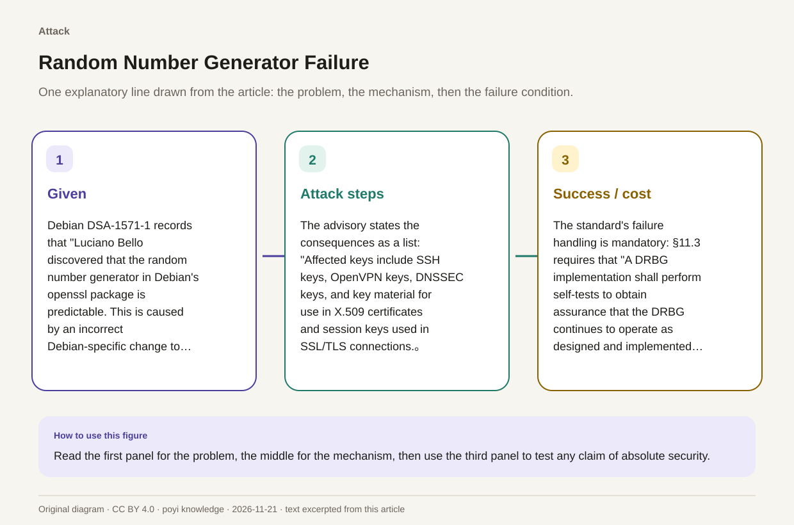
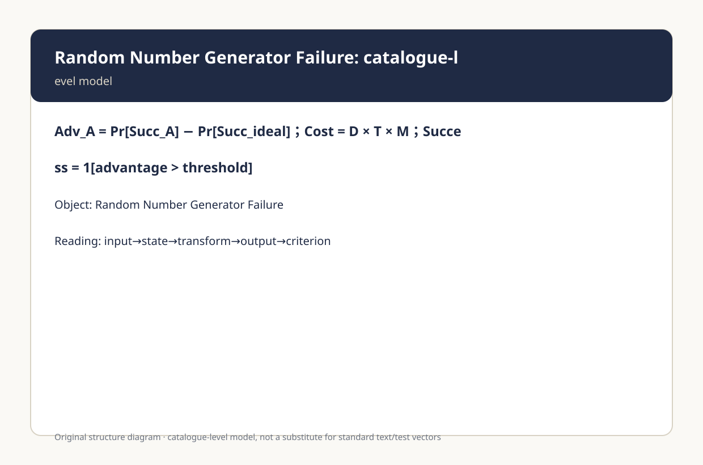

Principles
Attack: RNG Failure (随机数失效). Debian DSA-1571-1 records that "Luciano Bello discovered that the random number generator in Debian's openssl package is predictable. This is caused by an incorrect Debian-specific change to the openssl package (CVE-2008-0166). As a result, cryptographic key material may be guessable." The advisory header lists the vulnerability as a "predictable random number generator" and marks "Debian-specific: yes", showing that a randomness failure can come from packaging changes rather than from the algorithm.

Why it matters
SP 800-90A Rev.1 puts the responsibility on the seed: §1 requires that "The seed used to instantiate the DRBG must contain sufficient entropy to provide an assurance of randomness", §8.6.1 that "Entropy input shall always be used in the construction of a seed", §8.6.3 that the entropy input equal or exceed the security strength of the instantiation, and §8.6.5 that "A DRBG mechanism requires an approved randomness source during instantiation and reseeding". If seed entropy is removed, a deterministic generator simply outputs predictable bits.
Applications
The advisory states the consequences as a list: "Affected keys include SSH keys, OpenVPN keys, DNSSEC keys, and key material for use in X.509 certificates and session keys used in SSL/TLS connections. Keys generated with GnuPG or GNUTLS are not affected, though." It also strongly recommends that "all DSA keys ever used on affected Debian systems for signing or authentication purposes should be considered compromised; the Digital Signature Algorithm relies on a secret random value used during signature generation." The version table gives the first vulnerable build 0.9.8c-1 (uploaded to unstable on 2006-09-17) and the fixed builds etch 0.9.8c-4etch3 and sid/lenny 0.9.8g-9.

Limits & attacks
The standard's failure handling is mandatory: §11.3 requires that "A DRBG implementation shall perform self-tests to obtain assurance that the DRBG continues to operate as designed and implemented (health testing)", and §11.4.2 says errors detected during health testing "shall be perceived as catastrophic DRBG failures"; on failure "the DRBG shall enter an error state and output an error indicator", and "The DRBG shall not perform any instantiate, generate or reseed operations while in the error state, and pseudorandom bits shall not be output when an error state exists". Section 10.1 names Hash_DRBG and HMAC_DRBG, with CTR_DRBG in §10.2 — three mechanisms — and Appendix E records that "The Dual_EC_DRBG has been removed, and section numbers adjusted accordingly".
History
DSA-1571-1, issued by Florian Weimer on 13 May 2008 for CVE-2008-0166, traces the defect to a packaging change that entered Debian's unstable distribution in September 2006. On the standards side, Barker and Kelsey's SP 800-90A Rev.1 (June 2015) removed the Dual_EC_DRBG. Together they show that generator failure can come from a distribution-level change as well as from the choice of mechanism itself.
Worked example & verification
Formal model and reproduction steps
[\mathrm{Adv}^{\mathrm{attack}}_A(\lambda)=\Pr[\mathrm{Game}_A(\lambda)=1]-\frac12]
RNG Failure: the registered public parameters, key material or randomness, and message are mapped through the stated transformation to an output checked against the registered criterion. The worked example is a structural reproduction, not a new test vector; parameter ranges, standard versions and implementation details remain source-bound.
References
- Wikipedia search entry for 随机数失效. https://zh.wikipedia.org/w/index.php?search=%E9%9A%8F%E6%9C%BA%E6%95%B0%E5%A4%B1%E6%95%88
- Handbook of Applied Cryptography (Menezes, van Oorschot, Vanstone). https://www.cacr.math.uwaterloo.ca/hac/